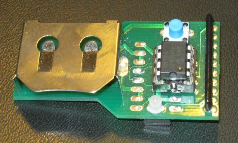
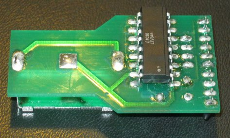

This puzzle is a physical device. The first part of the puzzle is assembling it correctly, which is a jigsaw puzzle in the form of a soldering exercise.
When the device is assembled, it looks like this:
 
When you turn the device on, it immediately starts flashing morse code at you:
ENTER MORSE NO SPACES
You feed in the show puzzle answers into the device, by using the switch to tap them in morse code. The device repeats the answer back to you — strangely omitting the proper long inter-letter/inter-word spacing — and then flashes a pair of letters, as follows:
15 JAIHO .--- .- .. .... --- -> MI 16 CARSEAT -.-. .- .-. ... . .- - -> CH 17 BYLINE -... -.-- .-.. .. -. . -> AE 18 LOVEETC .-.. --- ...- . . - -.-. -> LO 19 CARPAL -.-. .- .-. .--. .- .-.. -> FM 20 THESOUTH - .... . ... --- ..- - .... -> ON 21 GODUTCH --. --- -.. ..- - -.-. .... -> TY 22 SUBSTITUTE ... ..- -... ... - .. - ..- - . -> PY 23 CASHCOW -.-. .- ... .... -.-. --- .-- -> TH 24 MARSROVER -- .- .-. ... .-. --- ...- . .-. -> ON
Note that answers are ordered by the length, counted in morse code dots and dashes. The phrase reads, “MICHAEL OF MONTY PYTHON” cluing “PALIN”.
Now you need the next aha. When you assembled the device, everything was rotationally symmetric except for one piece. Analysis of the circuit will also show some strange components (a resistor across the LED, for instance, and a optoisolator used as a bridge rectifier). The schematic of the device is:
Here’s the key: most components in this circuit can be rotated or inserted on the ‘wrong’ side of the board, without changing the behavior of the circuit. But one of the components (the IC) can be inserted in two different ways, and will give different behavior depending on which way it’s inserted. Extracting it from its socket and rotating the IC (made easier if you have a small flat head screwdriver, as we recommended in the pre-hunt instructions) gives a different set of letter pairs from the same answers:
15 JAIHO .--- .- .. .... --- -> JO 16 CARSEAT -.-. .- .-. ... . .- - -> HN 17 BYLINE -... -.-- .-.. .. -. . -> MA 18 LOVEETC .-.. --- ...- . . - -.-. -> RT 19 CARPAL -.-. .- .-. .--. .- .-.. -> IN 20 THESOUTH - .... . ... --- ..- - .... -> LE 21 GODUTCH --. --- -.. ..- - -.-. .... -> AH 22 SUBSTITUTE ... ..- -... ... - .. - ..- - . -> YN 23 CASHCOW -.-. .- ... .... -.-. --- .-- -> OV 24 MARSROVER -- .- .-. ... .-. --- ...- . .-. -> EL
Which gives, “JOHN MARTIN LEAHY NOVEL” cluing DROME.
Putting the two parts together gives PALINDROME.
Now what?
Entering the critic answers into the device gives a number, rather than a letter pair. The output is independent of component rotation:
FOOT ..-. --- --- - -> 10 TASTE - .- ... - . -> 11 PARTY .--. .- .-. - -.-- -> 12 DONKEY -.. --- -. -.- . -.-- -> 13 SANDWICH ... .- -. -.. .-- .. -.-. .... -> 14 FABRIC ..-. .- -... .-. .. -.-. -> 15 MECHANICS -- . -.-. .... .- -. .. -.-. ... -> 16 HAIRSTYLE .... .- .. .-. ... - -.-- .-.. . -> 17 SEASON ... . .- ... --- -. -> 18
Now here’s the second aha. You are looking for a PALINDROME which is a specific instance of the category given by the critic answer. But it’s not a normal palindrome, it’s a morse code palindrome, where inter-letter spaces are ignored. (This is hinted by the fact that the device ignored your inter-letter and inter-word spaces when you keyed in the show answers.) Further, the palindrome should be of the length given by the output above. When you key in the correct palindrome, you get letter pairs (different for each orientation of the IC) as above.
Critic answer: Length: Palindrome: Letter pairs: FOOT 10 IAMB ...----... IN AT TASTE 11 UMAMI ..---.---.. MA LO PARTY 12 WHIG .--......--. RC NG DONKEY 13 EEYORE ..-.-----.-.. HN HO SANDWICH 14 REUBEN .-....--....-. IN RN FABRIC 15 TAFFETA -.-..-...-..-.- ET SP MECHANICS 16 FLUID ..-..-....-..-.. YS EE HAIRSTYLE 17 TOPKNOT ----.--.-.--.---- EV DW SEASON 18 WINTERTIME .--..-.-..-.-..--. EN AY
This gives the two part clue:
IN MARCH NINETY SEVEN AT LONGHORN SPEEDWAY
Typing just that into google will reveal the title of the Survival Research Labs show on March 28, 1997: THE UNEXPECTED DESTRUCTION OF ELABORATELY ENGINEERED ARTIFACTS which is, indeed, the perfect way to piss off our critic, Ben Bitdiddle.
(Source code to the device is available if you want to make your own.)
There is also an easter egg included, used in the final runaround.